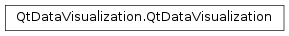

QtDataVisualization¶
Synopsis¶
Static functions¶
- def
qDefaultSurfaceFormat([antialias=true]) - def
qDefaultSurfaceFormat(antialias)
Detailed Description¶
Contains the classes and enumerations in the Qt Data Visualization module.
-
static
PySide2.QtDataVisualization.QtDataVisualization.qDefaultSurfaceFormat([antialias=true])¶ Parameters: antialias – PySide2.QtCore.boolReturn type: PySide2.QtGui.QSurfaceFormatThis convenience function can be used to create a custom surface format suitable for use by Qt Data Visualization graphs.
The
antialiasparameter specifies whether or not antialiasing is activated.Give the surface format returned by this function to the graph constructor (C++) or set it as the window format for
PySide2.QtQuick.QQuickView(QML) before callingshow()on it.For example, disable antialiasing on C++ application:
#include <QtDataVisualization/qutils.h> // ... Q3DBars *graph = new Q3DBars(QtDataVisualization::qDefaultSurfaceFormat(false));
For example, enable antialiasing for direct rendering modes on QML application:
#include <QtDataVisualization/qutils.h> // ... QQuickView viewer; viewer.setFormat(QtDataVisualization::qDefaultSurfaceFormat());
Note
Antialiasing is not supported in OpenGL ES2 environments.
-
static
PySide2.QtDataVisualization.QtDataVisualization.qDefaultSurfaceFormat(antialias) Parameters: antialias – PySide2.QtCore.boolReturn type: PySide2.QtGui.QSurfaceFormatThis convenience function can be used to create a custom surface format suitable for use by Qt Data Visualization graphs.
The
antialiasparameter specifies whether or not antialiasing is activated.Give the surface format returned by this function to the graph constructor (C++) or set it as the window format for
PySide2.QtQuick.QQuickView(QML) before callingshow()on it.For example, disable antialiasing on C++ application:
#include <QtDataVisualization/qutils.h> // ... Q3DBars *graph = new Q3DBars(QtDataVisualization::qDefaultSurfaceFormat(false));
For example, enable antialiasing for direct rendering modes on QML application:
#include <QtDataVisualization/qutils.h> // ... QQuickView viewer; viewer.setFormat(QtDataVisualization::qDefaultSurfaceFormat());
Note
Antialiasing is not supported in OpenGL ES2 environments.
© 2018 The Qt Company Ltd. Documentation contributions included herein are the copyrights of their respective owners. The documentation provided herein is licensed under the terms of the GNU Free Documentation License version 1.3 as published by the Free Software Foundation. Qt and respective logos are trademarks of The Qt Company Ltd. in Finland and/or other countries worldwide. All other trademarks are property of their respective owners.